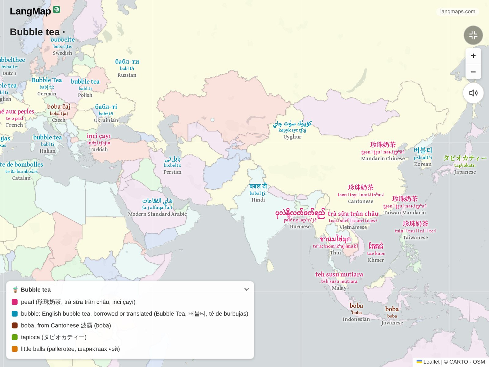

Bubble Tea: Pearls, Bubbles, and a Hong Kong Actress
- In Taiwan, the little balls in milk tea became "pearls."
- In English, the drink became "bubble tea," a name whose bubbles may never have been bubbles at all.
- And in America, it became "boba," a word with a cheeky history, a Hong Kong actress, and an English word hidden inside.

Contents
A drink with three names
Walk into a bubble tea shop in Taipei, Tokyo or Los Angeles.
You might be ordering essentially the same drink.
But its names tell very different stories.
珍珠 (zhēnzhū): pearls.
Bubble: foam, or perhaps just a sound.
波霸 (bōbà): boba.
How did one Taiwanese drink acquire so many names?
Taiwan: a cup full of pearls
Bubble tea emerged in Taiwan during the 1980s.
Two famous tea houses claim a role in its invention: 春水堂 (Chūnshuǐtáng) in Taichung, which dates it to 1987, and 翰林茶館 (Hànlín Cháguǎn) in Tainan, which dates it to 1986. In 2019 a Taiwanese court ruled that bubble tea could not be patented, and gave the credit to neither.
The chewy tapioca balls resembled little black pearls.
So the drink became:
珍珠奶茶 (zhēnzhū nǎichá)
"Pearl milk tea"
Often shortened to 珍奶 (zhēnnǎi).
The idea crossed languages. Vietnamese calls it trà sữa trân châu, and trân châu is the Sino-Vietnamese reading of 珍珠: the same characters, transformed into Vietnamese sounds. Thai ชานมไข่มุก, Turkish inci çayı, French thé aux perles and Malay teh susu mutiara all put the pearl into their own words.
But English took another route.
Where did the bubbles come from?
Taiwan does have real bubbles in its tea history. Before tapioca pearls became famous, tea shops were already shaking iced tea until it foamed:
泡沫紅茶 (pàomò hóngchá)
"Foam black tea"
It is tempting to see the English name in that froth. But the sources do not draw that line. Wikipedia describes the foam tea without connecting it to the English name, and Wiktionary suggests a different origin: bubble tea as a sound-alike of boba tea, keeping the sound of boba while fitting pearls that supposedly look like bubbles.
If that is right, the bubbles may never have been bubbles at all.
Either way, the English name traveled:
Korean: 버블티 (beobeul ti)
Russian: бабл-ти (babl ti)
German: Bubble Tea
Spanish: té de burbujas, "tea of bubbles"
But in the United States, another name became especially popular.
And its origin is much less innocent.
Boba: from English to Cantonese, and back again
Americans often call the drink simply boba.
The name comes from 波霸 (bōbà; Cantonese bo1 baa3).
Originally, it was not a drink. In Hong Kong Cantonese, 波霸 was slang for a woman with large breasts, and the name is traced to a nickname of the Hong Kong actress Amy Yip (葉子楣).
Why boba?
The first character, 波, is Cantonese for "ball," a borrowing from English ball. The second, 霸, means "chief, top." So the word is, quite literally, "big balls."
The nickname was then applied to the large tapioca pearls. And eventually, to the drink itself.
English ball
→ Cantonese 波
→ 波霸, "big balls"
→ American English boba
An English word went to Hong Kong, acquired a cheeky new meaning, and returned to America inside a cup of tea.
Japan: when a drink became a verb
Japan chose yet another name:
タピオカティー (tapioka tī)
Named after the tapioca itself. And tapioca goes back to Old Tupi, a language of Brazil.
During Japan's bubble tea boom, young people even made a verb out of it:
タピる (tapiru)
"To go out for tapioca drinks"
It came first in a 2018 survey of slang among middle-school girls.
A Taiwanese drink. A South American ingredient. A newly invented Japanese verb.
One drink, a world of languages
In Taiwan, it became pearls.
In English, bubbles.
In America, boba.
In Vietnam, the Chinese characters for pearls survived in pronunciation.
In Japan, the ingredient became a fashionable verb.
Every language picked a different part of the same drink and turned it into a name. Behind those names lie two rival tea houses, a Brazilian root, a Hong Kong nickname, and a word that left English as ball and came back as boba.
One cup of tea. A whole world of linguistic history.